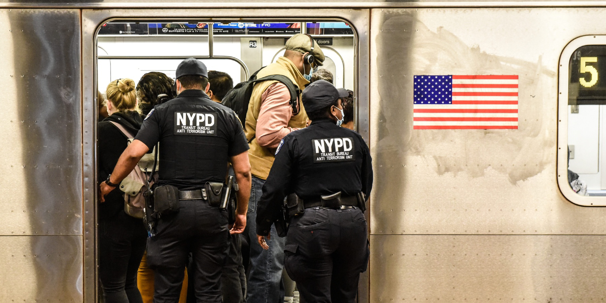
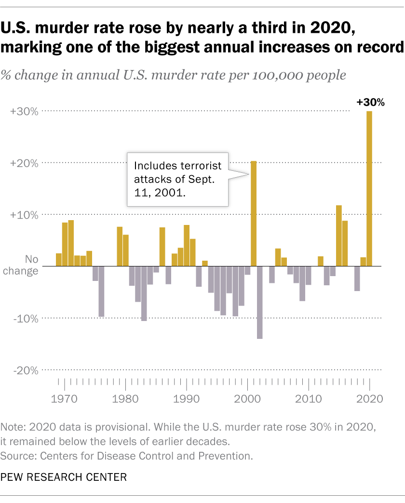
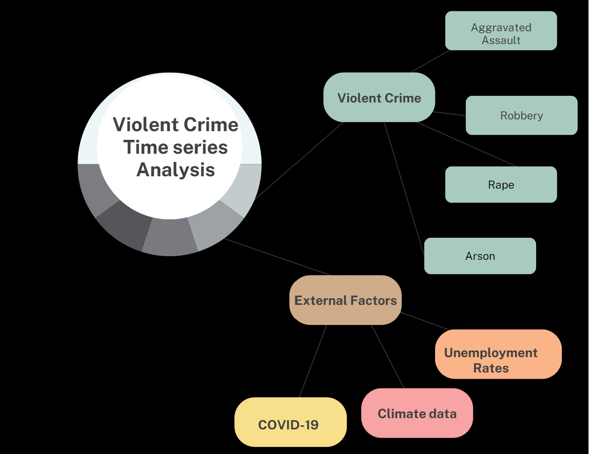

Introduction

Time series analysis and forecasting of violent crime data in New York City
Understanding Crime Trends in NYC:
After the outbreak of COVID-19 in 2021, violent crimes in New York City (NYC) have undergone significant fluctuations. These criminal activities threaten the safety and well-being of NYC’s residents and communities. one thing worth nothing that, the city has witnessed changes in various aspects of violent crimes, with some categories of violent crimes experiencing increases while others have decreased during the pandemic. For example, the number of murders and other serious violent crimes has raised significant concerns, while there has also been a decline in certain minor offenses. 
Another perspective of criminal activities during COVID-19 pandemic era is that according to this article Boman and Gallupe (2020), the study has found that crime decreased compared with 2019. But this decrease in crime rates was mostly contributed to minor crimes that happened when people aren’t staying home. More serious crimes like murders, has stayed the same and even got worse.
Project overview
Violent crime numbers in New York City is not a static measure and can vary over time. This project aims to provide an in-depth analysis of crime trends in NYC, utilizing statistical learning method including
ARIMA/SARIMAmodels,ARIMAX/SARIMAXmodels,VARmodels, and deep learning modelings incluingRNNmodels,GRUmodels, andLSTMmodels for modeling and forecasting, and at the same time, focusing specifically on the following aspects:In this project, I will focus on different sides and perspectives listed below:
Gathering data on different categories of violent criminal activities, such as murder, rape, robbery, aggravated assault.
Collecting time-series data on COVID-19 infection rates to examine how the pandemic has influenced violent crime rates over time in NYC.
Incorporating relevant socioeconomic data to investigate the relationship between violent crime rates and societal factors, I will focus primarily on unemployment rates data in NYC
Analyzing geographical data with geographical data visualizaton, including violent crime rates across different neighborhoods, boroughs, and regions of NYC, to uncover patterns and correlations.
Considering weather and climate data to explore how different weather conditions may correlate with violent crime rate fluctuations over time.
Examining historical violent crime data specific to New York City in the 21st century to understand the evolution of crime rates and improvements in data collection methods.
Big picture

Important questions to answer
1. How have violent crimes in New York City evolved over the past decade?
2. What are the variations in crime rates among different categories of violent criminal activities in NYC over time?
3. How has the COVID-19 pandemic cases influenced violent crime rates in New York City? Are there specific trends related to the pandemic’s impact on different types of crimes?
4. How has the unemployment rates in NYC influenced violent crime rates in New York City? Are there specific trends related to the unemployment’s rates impact on different types of crimes?
5. How has the weather in NYC influenced violent crime rates in New York City? Are there specific trends related to the weather’s impact on different types of crimes?
6. What are the differences in predictive performance between traditional time-series models and advanced techniques like deep learning modeling when forecasting violent crime trends in NYC?
7. What insights can be derived from the forecasted models? How quickly do these models respond to changes in violent crime rates, and how far into the future can they predict?
8. What are the key takeaways from this project in terms of understanding the factors contributing to crime rates in NYC, and how can this knowledge be used to mitigate crime and enhance public safety in the city?